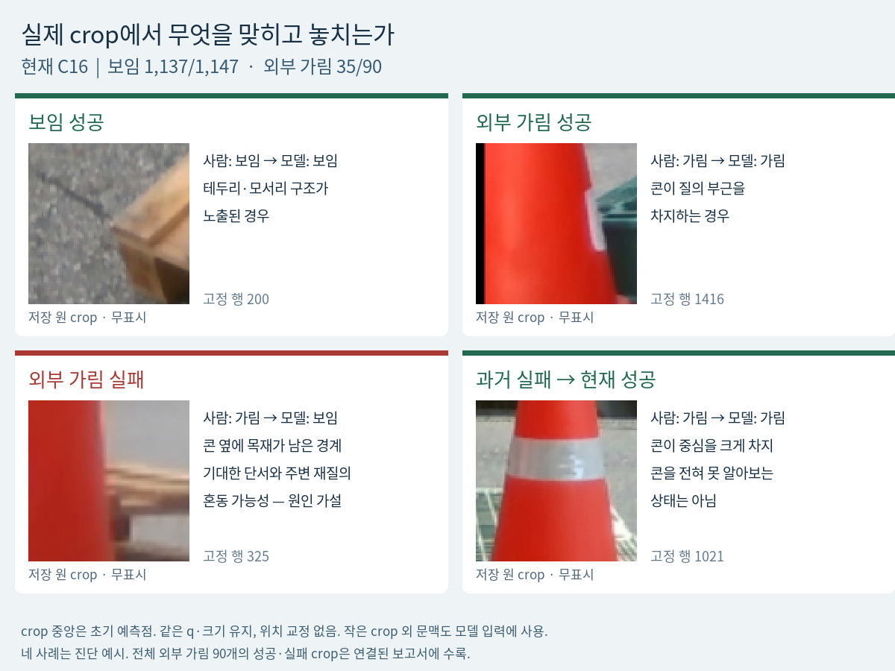
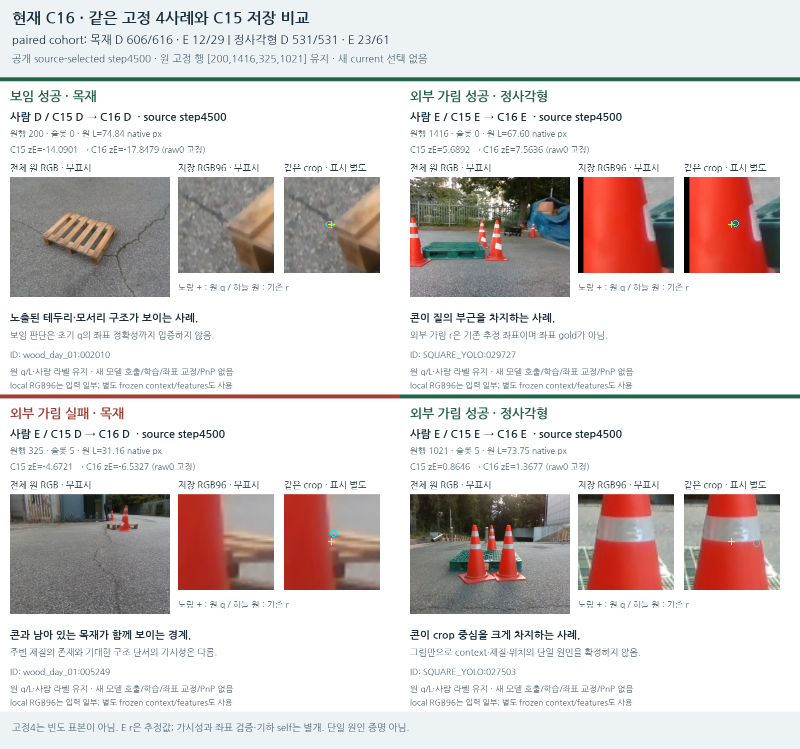
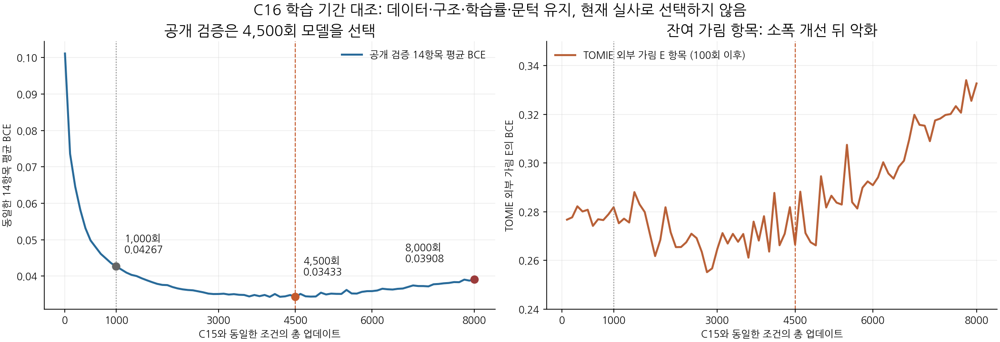
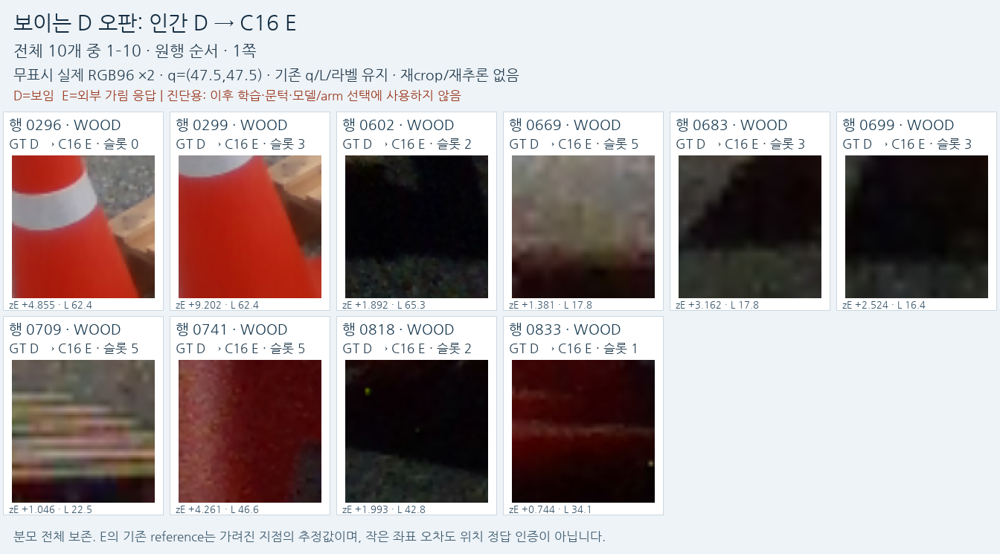
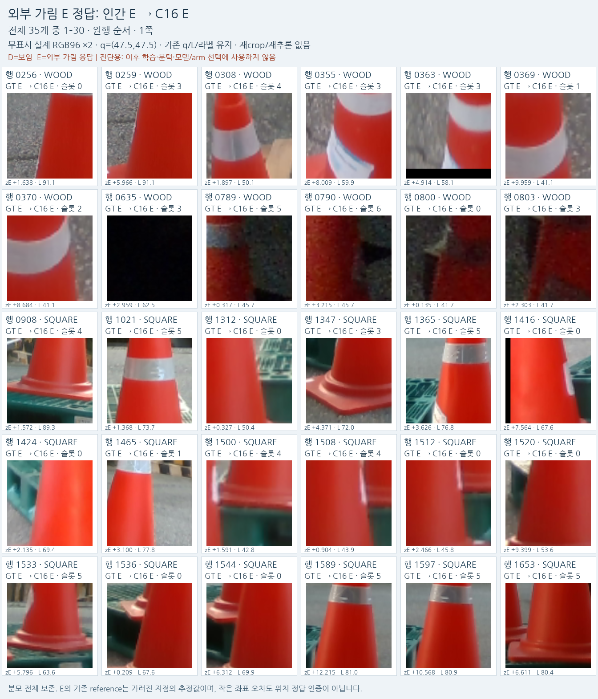
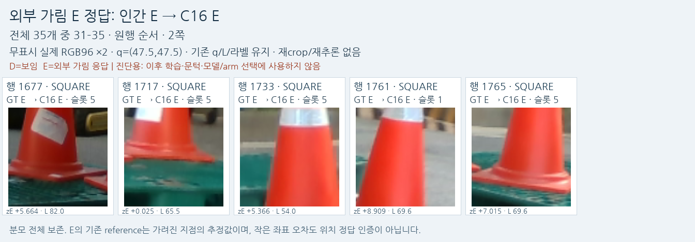
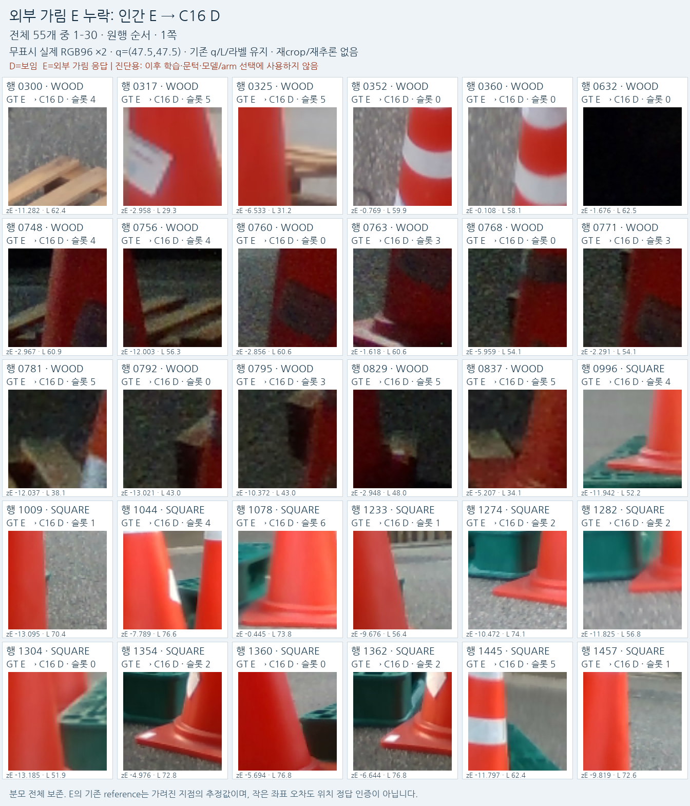
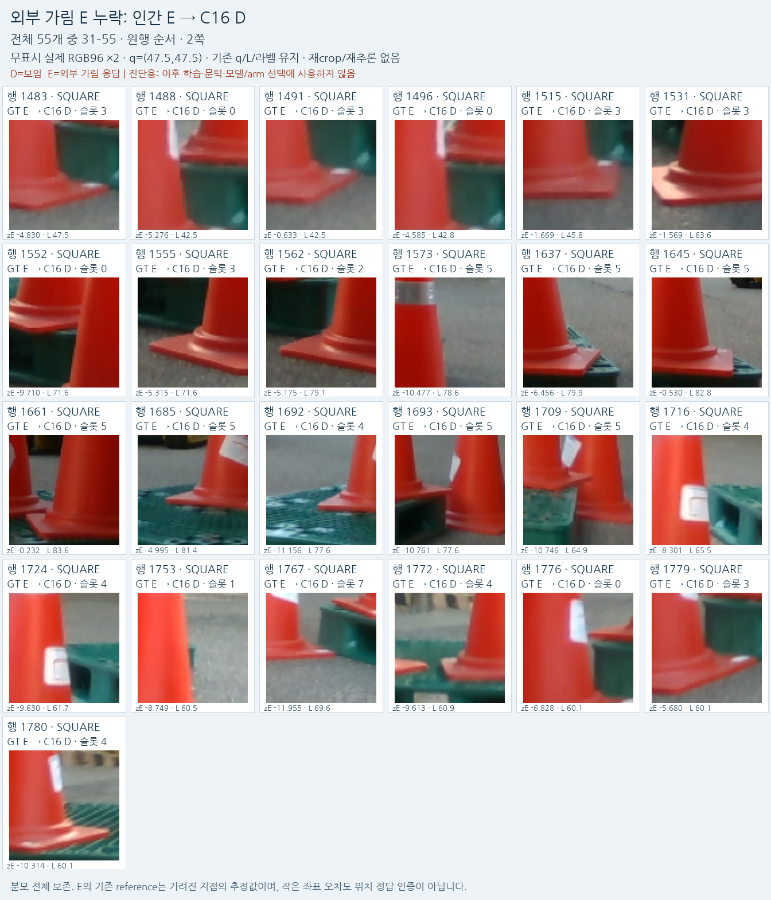

실제 crop으로 본 성공·실패와 남은 문제
현재 C16: 보임 1,137/1,147개 유지 · 외부 가림 35/90개 검출 · 외부 가림 55개 누락
자기 가림은 초기 기하로 처리하고, 학습 head는 초기 q와 문맥에서 해당 구조 단서의 보임/외부 가림을 판단한다. 좌표를 새로 찾거나 교정하지 않았다.
같은 네 사례, 현재 모델의 판정

원 q/L을 유지한 실제 저장 RGB. 왼쪽 아래는 남은 외부 가림 실패, 오른쪽 아래는 과거 실패에서 현재 성공으로 바뀐 사례.
전체 원본·q 표시와 C15/C16 점수를 함께 보기

같은 고정4사례의 전체 원본, raw crop, 표시 복사본과 저장 점수.가림 물체인 콘을 전혀 못 알아보는 상태는 아니다. 그러나 남은 팔레트 재질의 존재와 기대한 구조 단서의 가시성을 혼동할 수 있다는 가설이 남는다. 그림만으로 단일 원인이나 숨은 reference 좌표의 정확성을 확정하지 않는다.
같은 평가 대상의 수치
행은 사람 D/E, 열은 예측 D/E/U. D=보임, E=외부 가림, U=보류. 같은 초기 query의 비교이며 v61/기존 모델과 C11 이후의 입력 특징은 서로 다르다.
| 유형 | 모델 | 혼동행렬 D행 / E행 | 보임 recall | 가림 precision | 가림 recall | 보류율 |
|---|
| 목재 | v61 | 145, 471, 0 / 0, 29, 0 | 23.5% | 5.8% | 100.0% | 0.0% |
| 목재 | 기존 실사 모델 | 448, 65, 103 / 2, 23, 4 | 72.7% | 26.1% | 79.3% | 16.6% |
| 목재 | C11 | 598, 18, 0 / 11, 18, 0 | 97.1% | 50.0% | 62.1% | 0.0% |
| 목재 | C14 | 599, 17, 0 / 20, 9, 0 | 97.2% | 34.6% | 31.0% | 0.0% |
| 목재 | C15 | 599, 17, 0 / 15, 14, 0 | 97.2% | 45.2% | 48.3% | 0.0% |
| 목재 | C16 현재 | 606, 10, 0 / 17, 12, 0 | 98.4% | 54.5% | 41.4% | 0.0% |
| 정사각형 | v61 | 115, 416, 0 / 2, 59, 0 | 21.7% | 12.4% | 96.7% | 0.0% |
| 정사각형 | 기존 실사 모델 | 207, 254, 70 / 1, 60, 0 | 39.0% | 19.1% | 98.4% | 11.8% |
| 정사각형 | C11 | 531, 0, 0 / 44, 17, 0 | 100.0% | 100.0% | 27.9% | 0.0% |
| 정사각형 | C14 | 531, 0, 0 / 55, 6, 0 | 100.0% | 100.0% | 9.8% | 0.0% |
| 정사각형 | C15 | 531, 0, 0 / 40, 21, 0 | 100.0% | 100.0% | 34.4% | 0.0% |
| 정사각형 | C16 현재 | 531, 0, 0 / 38, 23, 0 | 100.0% | 100.0% | 37.7% | 0.0% |
C15→C16: 목재 E14→12/29, 정사각형 E21→23/61, 합계35/90 유지. 보임은7개 추가 보존했다. 최신 모델은 현재 평가로 선정한 최상 모델을 뜻하지 않는다.
학습을 더 오래 하면 해결되는가

데이터·head·학습률·문턱을 고정한 기간 대조. 공개 검증으로4500회 모델 선택. 총8000회까지 반복해도 잔여 가림의 개선은 제한적이다.
공개 평균 BCE는 1,000회 0.04267 → 4,500회 0.03433 → 8,000회 0.03908이었다. 공개 목재 블록 가림의 중앙 성공은16→18/32로 소폭 개선했지만, 현재 실사 가림 검출 합계는 늘지 않았다. 같은 자료의 반복 횟수 부족만으로 설명하기 어렵다.
공개 학습 자료에서 직접 확인한 빈틈
최근 추가 source의 known COVER E 2,070/2,070개는 q pixel도 붙인 가림 물체 안에 있었다. SHAM D 2,070/2,070개는 q pixel이 그 물체 밖이었다. 즉 이 묶음에는 기준 단서는 가려졌으나 초기 q만 경계를 넘어 주변 원본 쪽을 보는 E가 없다. 합성 정답이 틀렸다는 뜻이 아니라, 목표에 필요한 조합의 범위가 부족하다는 뜻이다.
 실제 사용한 공개 배경 기반 BEFORE / COVER / SHAM 예시. COVER는 기준 단서와 q를 덮고 SHAM은 단서를 보존한다.
실제 사용한 공개 배경 기반 BEFORE / COVER / SHAM 예시. COVER는 기준 단서와 q를 덮고 SHAM은 단서를 보존한다.
최근4,896개 파생 crop의 원본은9장·구조 단서32개이며, 새 학습에 들어간846known행은3장·6개 단서다. 공개 실사를 사용했어도 자연 외부 가림의 종류와 촬영 환경이 충분해졌다고 할 수 없다.
목표의 적절성과 다음 해결 방향
보임과 외부 가림을 판별하는 목표 자체가 과도하다는 증거는 없다. 지금은 일부 전이와 성공이 확인됐지만 신뢰할 수준으로 해결되지는 않았다. 모든 작은 crop에서 좌표 정확성까지100% 증명하는 문제로 확대하면 안 된다.
- 같은 데이터의 추가 반복을 기본 처방으로 삼지 않는다. 총8000회 대조에서 공개 검증은8000회 시점에4500회 최저값보다 악화했고 실사 E정답 총수는 늘지 않았다.
- 공개 source에서 확인된 구성 빈틈을 보완한다: 정확한 기준점을 갖는 합성 구조 또는 근거가 명확한 공개 구조 단서에서 의미상 가림과 q-pixel foreground 여부가 항상 일치하지 않는 경계·좌표오차 조합을 만들고 별도 검증한다. 약한 단서의 불확실 범위를 임의로 줄여 확정 라벨을 만들지 않는다.
- 추가 확보한 LOCO 공식 TRAIN 촬영 묶음에서 원본·시점·배경 다양성을 늘린다. TOMIE scenario1은 별도 archive지만 다른 시설/날짜/실물 독립성은 미확인이다. 기존 VAL을 TRAIN으로 옮기지 않는다.
- 주변에 가림 물체가 있어도 기준 단서가 보이는 D와, 주변 팔레트 재질은 남아도 기준 단서가 가려진 E를 대조한다. 공개 검증에서 보임 보존·E precision/recall·판단 보류를 함께 확인하고 설정을 동결한다.
새 공개 원본 후보 조사와 소량 샘플 확보는 마쳤지만 C16에는 사용하지 않았다. 다음 데이터 구성·학습 실험은 아직 완료했다고 주장하지 않는다.
전체 외부 가림90개와 보임 오판10개
잘 나온 사례만 골라 보이지 않도록 원행 순서로 전체 목록을 펼친다. 이 시각화는 진단용이며 현재 평가로 학습·문턱·모델을 선택하지 않는다.
전체 확인 결과: 콘과 남은 팔레트 재질이 섞이는 경계가 여러 실패에 반복된다. 그러나 행317·748처럼 콘 몸통이 중심을 차지하는데도 놓치는 사례가 있어, 경계나 목표 정의 차이만으로 설명할 수 없다. 실제 전이 실패도 남아 있다. 어두운 crop은 성공·실패 양쪽에 있어 조도 하나로도 설명할 수 없다. 원인별 전체 비율을 새 정답처럼 확정하지 않았다.
D_FALSE_E_01.png

D_FALSE_E_01.pngE_CORRECT_01.png

E_CORRECT_01.pngE_CORRECT_02.png

E_CORRECT_02.pngE_MISSED_01.png

E_MISSED_01.pngE_MISSED_02.png

E_MISSED_02.png해석의 한계와 저장 근거
- 현재223은 평가 전용으로 사용했지만 과거 개발에 노출된 자료이므로 독립 blind test가 아니다.
- 사람 E의 숨은 reference는 추정/미지정 출처이며 정확한 좌표 gold가 아니다. D/E 판단 성공이 초기 좌표 검증을 뜻하지 않는다.
- 최근 추가4896행은9장 원본·32개 약한 구조 단서에서 파생됐고, 추가 TRAIN known846행은3장 LOCO 원본의6개 단서다. 전체 이전 학습 자료의 원본 수를3장이라고 말하지 않는다.
- 공개 실사 배경과 물체 cutout을 사용한 COVER/SHAM은 조건부 AUX 정답이다. 자연 가림의 native 키포인트 gold와 같지 않다.
- 공개 source의 COVER2070행 q가 전부 alpha 내부라는 것은 이 source의 구성 빈틈이다. 전체 이전 데이터나 실제 실패55개의 단일 원인 증명이 아니다.
- 자기 가림은 기존 초기 기하 경로이며 학습 D/E와 분리했다. 현재 실사로 문턱·checkpoint·모델 arm을 선택하지 않았다.
- 고정4사례는 정성 진단 표본이고, 전체 E90 갤러리는 이 평가의 오류 목록이다. 어느 쪽도 자연 환경 전체의 원인 빈도 증명은 아니다.
- 전체1784개에서 입력 U45개와 주 비교 D/E1237개 안의 U0개는 서로 다른 분모다.
결과 JSON · 전체 crop 대응표 · 공개 source 경계 감사